야지 실물 시험 — 11/16, 23회
우면산 입구 경사·낙엽 숲길 직진·나무데크·c자·갈림길에서 자율주행 23회. 코스별로 묶었다. 휴대폰으로 따라 찍은 영상과 로봇 코스트맵을 시간에 맞춰 붙였다. 카드를 누르면 실험별 상세(영상·수치·플래너 상태·주행 카드).
야지 직진 (돌 피하기) 3회
낙엽 숲길 직진 약 7 m. 11:11 "야지 직진 대성공"은 돌을 보고 피해 목표 도착 — 시험자 메모 "시나리오 발표에 쓰면 될듯".
나무데크 (s자) 5회
나무데크 s자 길 약 17 m. 11:53 목표 도착(19 m 이동). 그 전 4회는 중간에 멈춤(시험자 메모: 위치추정 실패. 기록상 VIO는 끊기지 않았고 플래너가 차량 상태 지연 경고를 냄 — 원인 조사 중).
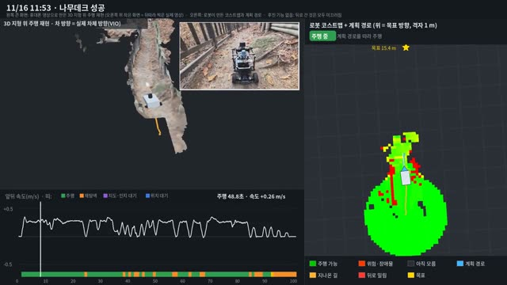
11/16 11:53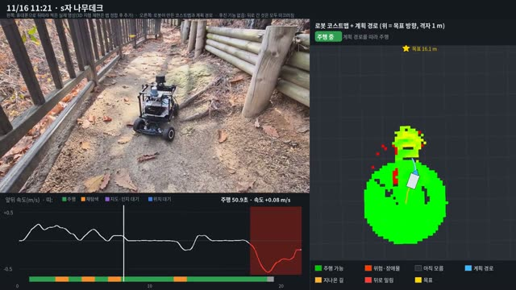
11/16 11:21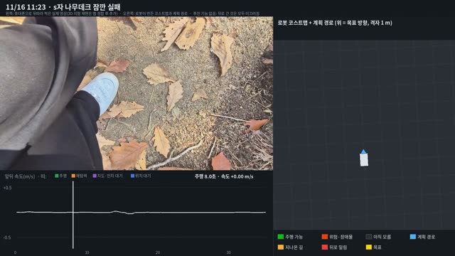
11/16 11:23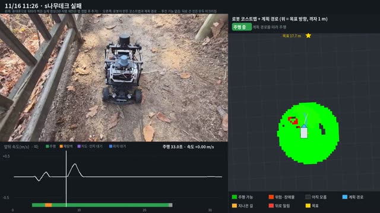
11/16 11:26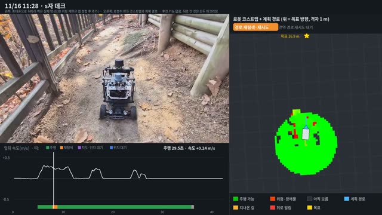
11/16 11:28c자 코스 4회
c자로 꺾어 가는 길. 12:16 목표 도착(15 m 이동). 10:53은 오르막 옆 c자.
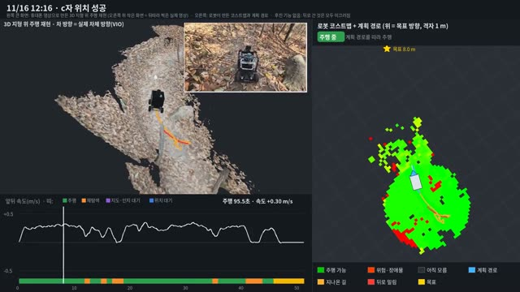
11/16 12:16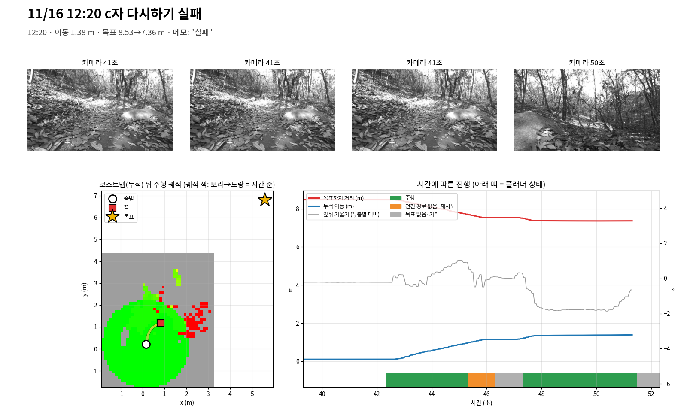
11/16 12:20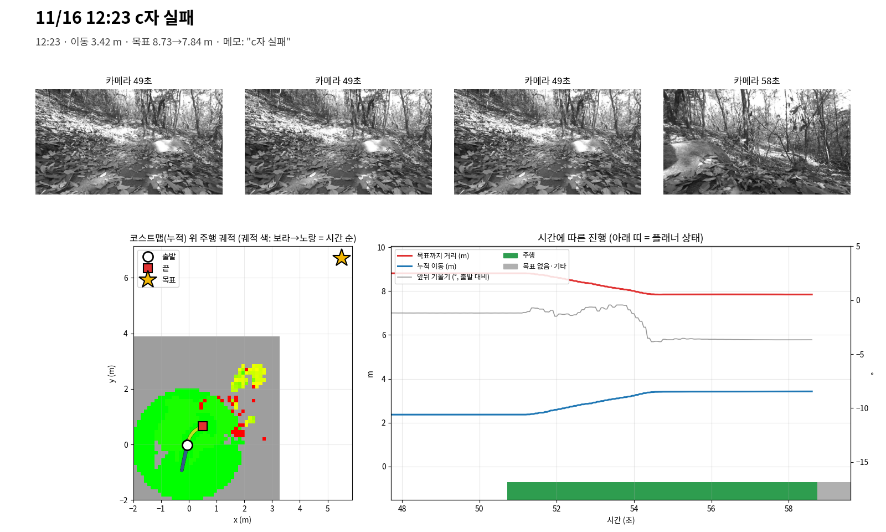
11/16 12:23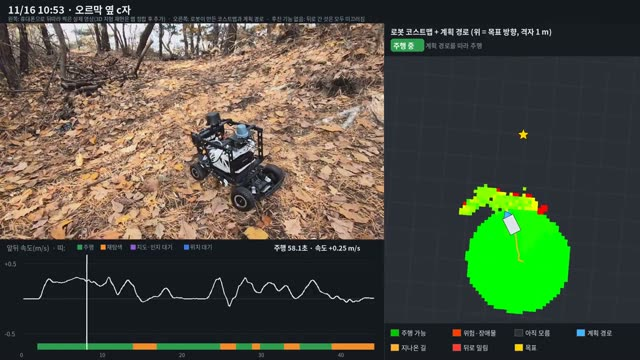
11/16 10:53갈림길 6회
갈림길 약 15~24 m. 13:07 목표 도달(22 m). 나머지는 돌·갈림길 인지가 늦거나 잘 안 돼 중간에 멈춤.
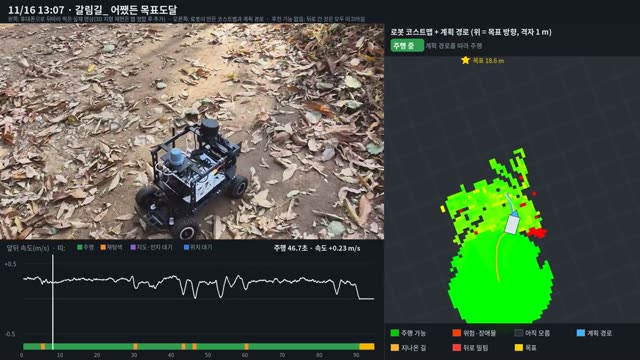
11/16 13:07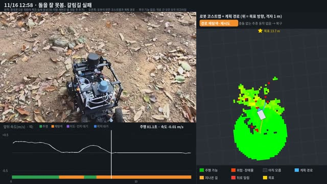
11/16 12:58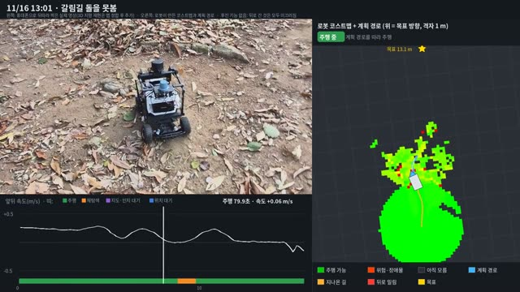
11/16 13:01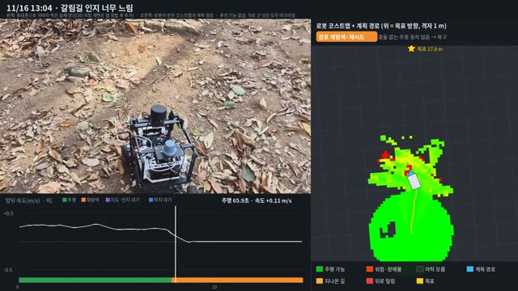
11/16 13:04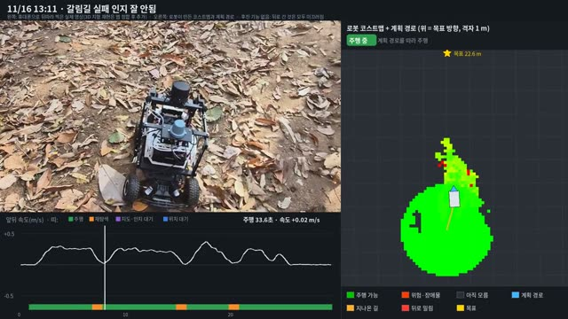
11/16 13:11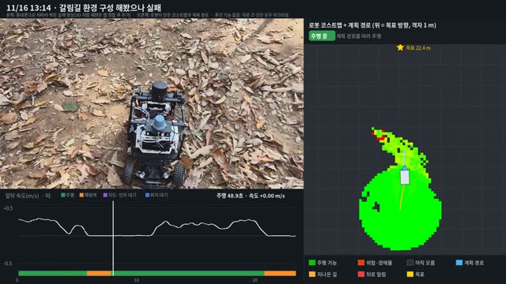
11/16 13:14우면산 입구 경사 5회
입구 경사 오르기 4회와 내리막 1회. 10:39 내리막 목표 도착. 오르기는 바퀴 헛돎·시험자 메모 "애매" 등으로 목표 전 멈춤.
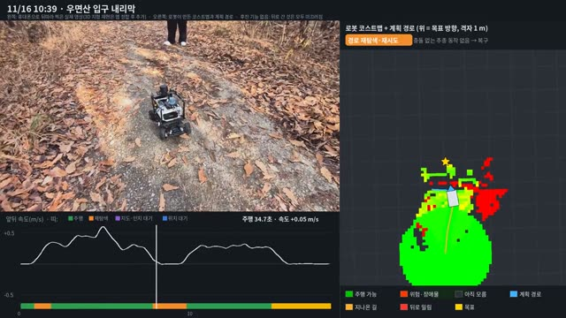
11/16 10:39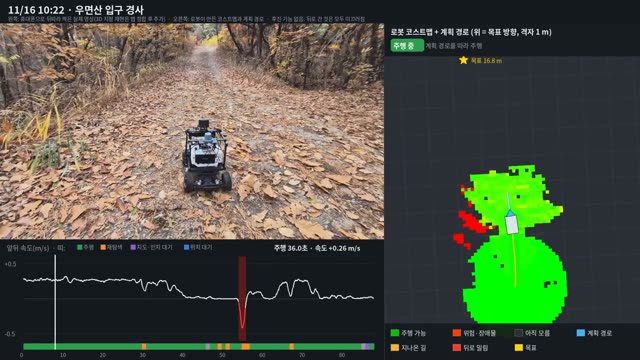
11/16 10:22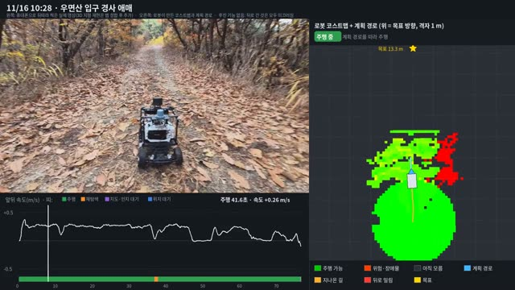
11/16 10:28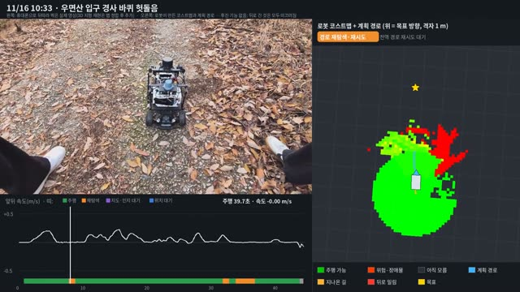
11/16 10:33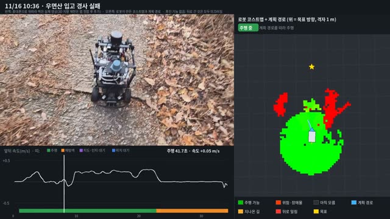
11/16 10:36읽는 법
막대 = 플래너가 시간을 쓴 비율(초록 주행, 주황 경로 재탐색, 보라 지도·인지 대기, 노랑 도착). 3D 지형 재현은 이날 찍은 맵핑 영상(4곳)으로 만든 3D 맵에 주행이 맞은 것부터 넣는다 — 지금은 11:53 나무데크 도착 1회. 나머지는 휴대폰·로봇 카메라 사진이 맵에 거의 맞지 않아 실제 영상판만 있다.